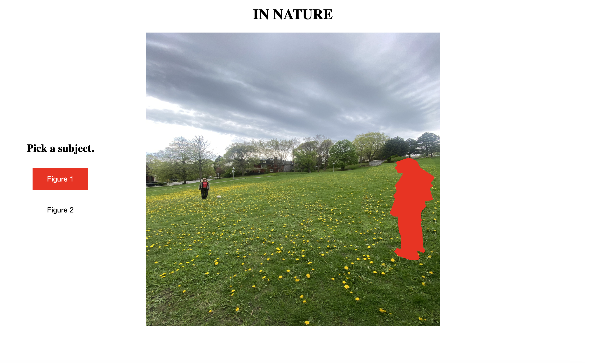
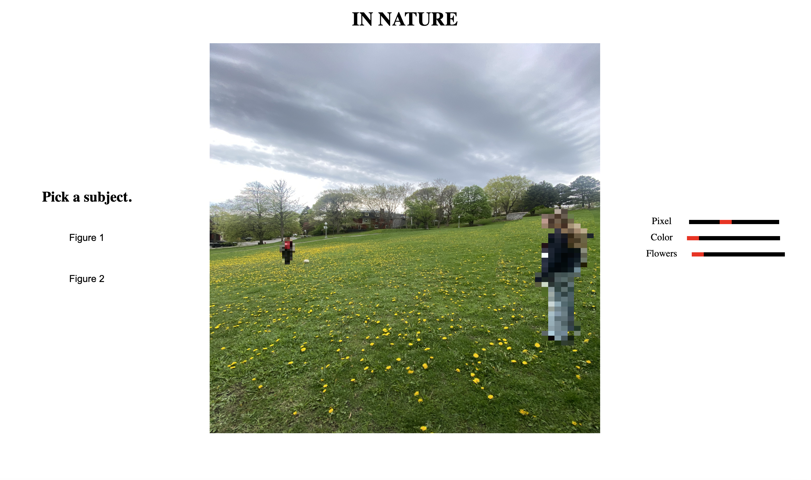
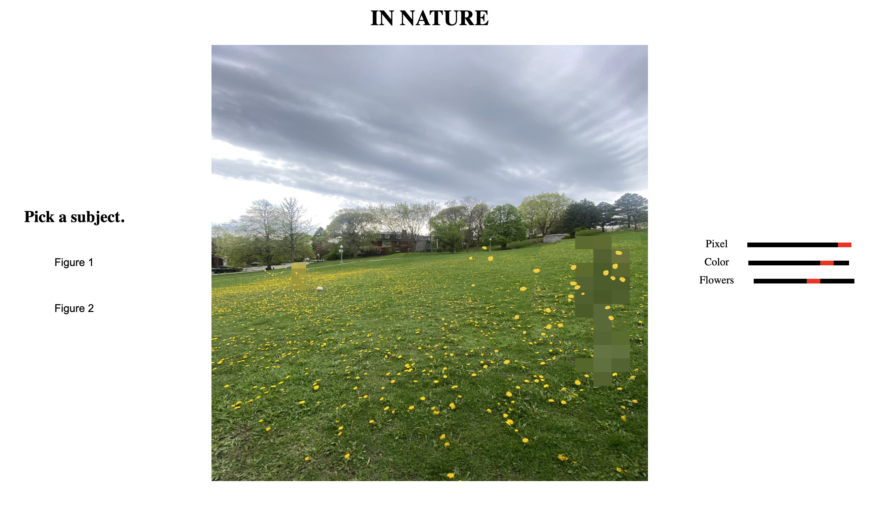

IN NATURE
TRY ITJavaScript · HTML · CSS
An interactive, web-based piece starring two figures in a field. This work asks whether they can ever truly become part of the environment around them. Adjusting pixelation, color, and overgrowth in real time, they seem closer and closer to disappearing into nature. However, is this really integration? Or just distortion made to look like it?
Key Features
- Real-time pixelation and color overlay
- Procedurally scattered flora with changeable position, size and density


